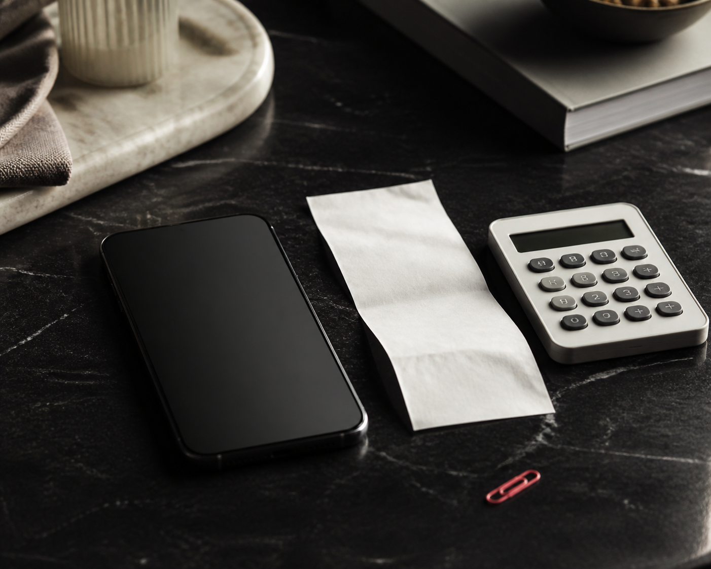

내 가게에 내가 만든 적 없는 '할인' 배지가 붙습니다 — 11월 구글 프로필에 생긴 것
구글 검색의 가게 정보에 할인 배지가 붙을 수 있습니다. 내가 만든 적 없는 배지도, 몇 달 전 인스타그램 행사 문구에서 구글이 찾아낸 배지도요. 11월 6일 공개된 구글 도움말이 배지의 출처와 지우는 절차를 처음 한 문서에 적었습니다.

구글에서 우리 가게를 검색했을 때, 가게 정보에 '15% 할인' 같은 배지가 붙어 있을 수 있습니다. 그 배지가 우리가 만든 적 없는 것일 수도 있습니다. 11월 6일 검색 매체가 보도한 구글 비즈니스 프로필 도움말에는 그 배지가 어디에 붙고, 어디서 오고, 어떻게 지우는지가 처음으로 한 문서에 정리됐습니다.
정확한 문서 이름은 「Manage offers on your Business Profile」입니다. 2026년 11월 23일 한국어 도움말(hl=ko)에서 같은 내용을 확인했습니다. 다만 제목은 '비즈니스 프로필에서 이벤트 관리하기'로 번역돼 있고, 본문은 계속 '혜택'이라는 단어를 씁니다.
배지는 지도가 아니라 검색에 붙습니다#
도움말이 밝힌 표시 위치는 두 곳입니다.
| 표시 위치 | 어떻게 보이나 |
|---|---|
| 검색 장소 시트 | '온라인 주문'이나 '테이블 예약' 버튼 옆 또는 바로 아래에, 접었다 펼 수 있는 혜택 칩으로 표시 |
| 구글 검색 AI 개요 | 검색 AI 개요와 상호작용할 때 혜택이 함께 표시될 수 있음 |
여기서 눈여겨볼 대목이 하나 있습니다. 도움말의 표시 위치 목록에 구글 지도는 없습니다. 지도에서 가게를 찾는 손님보다, 검색 결과에서 가게를 발견하는 손님에게 먼저 보이는 자리라는 뜻입니다.
혜택의 종류도 예시로 적혀 있습니다. 할인율, 정액 할인, 상품 단위 프로모션('메인 요리 1개 구매 시 애피타이저 1개 무료'), 매장 식사·예약 혜택('저녁 식사 예약 시 디저트 포함')입니다.
배지가 붙는 길은 세 갈래입니다#
도움말은 출처를 큰 틀에서 두 가지로 나누고, 두 번째 안에 다시 두 갈래가 있습니다. 문제는 그 뒤쪽입니다.
| 출처 | 설명 |
|---|---|
| 공인 서드파티 파트너 | 우리와 활성 비즈니스 관계를 맺고 구글에 혜택 데이터를 제공하는 업체(주문·예약 플랫폼 등) |
| 내가 만든 혜택 게시물 | 프로필에서 직접 만든 '혜택' 게시물 |
| 연결된 소셜 미디어 | 프로필에 연결된 인스타그램 같은 계정에서 구글이 '특별 프로모션'을 발견한 경우 |
도움말은 "프로모션을 추가하는 게시물을 만들거나, 연결된 소셜 미디어 프로필을 통해 발견된 특별 이벤트도 표시될 수 있다"고 적습니다. 내가 아무것도 하지 않아도 배지가 생길 수 있다는 뜻입니다. 반대로 말하면, 몇 달 전에 올린 '재고 정리' 게시물이 지금 우리 가게의 얼굴이 되어 있을 수 있습니다.
지난주 용인 매장 사장님과 통화하다 이 이야기가 나왔습니다. 손님이 계산대에서 휴대폰을 보여 주며 "여기 10%라고 나오는데요"라고 했다는 겁니다. 사장님은 그런 할인을 만든 적이 없었습니다. 직원은 몰랐고, 그 자리에서 손님과 이야기가 길어졌습니다. 그날 매출은 그대로였지만, 그 손님은 다시 오지 않았습니다. 배지 하나가 손님 한 명을 지운 셈입니다.
지우는 절차는 네 단계입니다#
도움말에 적힌 순서를 그대로 옮기면 이렇습니다.
- 비즈니스 프로필 지원 창에서 "어떤 도움이 필요하신가요?"에 혜택 삭제를 입력합니다.
- 카테고리에서 게시물 수정을 고르고, 다음 단계에서 이메일 또는 채팅을 선택합니다.
- 요청에 세 가지를 적습니다. 혜택을 표시하는 제3자 제공업체 이름, 혜택 내용(스크린샷이나 설명), 그리고 그 업체와 관계가 없다는 사실입니다.
- 구글 지원팀이 제공업체에 직접 문의할 수 있는 링크를 줍니다. 업체는 우리 요청을 받은 뒤 영업일 기준 5일 이내에 혜택을 내려야 합니다. 지키지 않으면 위반 신고 양식으로 넘어갑니다.
한 가지는 분명히 해 두겠습니다. 5영업일은 구글이 대신 지워 주는 기간이 아닙니다. 업체가 지워야 하는 기간입니다. 그래서 요청을 넣은 날짜와 답변을 남겨 두어야 합니다. 블랙프라이데이(11월 27일)처럼 손님이 몰리는 날을 앞두고 발견했다면, 그 주에 시작하는 건 늦습니다.
오늘 확인할 다섯 가지#
| 순서 | 할 일 | 확인 포인트 |
|---|---|---|
| 1 | 휴대폰과 PC에서 내 가게를 검색 | 이름 아래에 할인 배지가 있는지 |
| 2 | 배지가 있으면 출처를 짚어 보기 | 내 게시물인지, 파트너인지, SNS인지 |
| 3 | 끝난 배달·예약 업체 목록 정리 | 계약이 끝났는데 링크가 남아 있는 곳 |
| 4 | 연결된 SNS의 옛 행사 게시물 정리 | 기간이 지난 프로모션은 내리거나 날짜를 명시 |
| 5 | 이번 시즌 혜택을 낼 거라면 시작일·종료일 넣기 | 11월 27일 행사라면 28일에 내릴 준비까지 |
세 번째 항목은 특히 놓치기 쉽습니다. 배달앱이나 예약 플랫폼과 계약을 끝냈는데 그쪽이 혜택 데이터를 계속 보내는 경우가 도움말에 전제로 적혀 있습니다("이전 제공업체의 혜택인 경우"라는 문구가 그 증거입니다).
적용할 때 조심할 점#
이 기능은 도움말에 "일부 지역 및 언어에서만 사용할 수 있으며 일부 사용자에게는 제공되지 않을 수 있다"고 적혀 있습니다. 한국어 도움말은 열리지만, 우리 프로필에 배지가 실제로 표시되는지는 계정과 기기에서 직접 확인해야 합니다. 안 보인다고 해서 기능이 꺼진 것도, 없는 것도 아닙니다.
그리고 이제 이 배지는 검색 AI 개요에도 붙을 수 있습니다. AI가 답을 만들 때 우리 가게의 할인 정보를 읽는다면, 오래된 배지는 잘못된 답의 재료가 됩니다. AI 답변이 우리 가게를 어떻게 읽는지는 19편에서 따로 다뤘습니다.
혜택을 새로 만드는 일과 지우는 일은 다릅니다. 배지를 다는 건 클릭 몇 번이지만, 그 숫자는 계산대에서 손님이 들고 옵니다. 원가와 재고를 계산하기 전에는 만들지 않는 편이 낫습니다. 주문 버튼을 끄고 켜는 권한이 점주에게 생긴 이야기는 구글 지도 '주문' 버튼이 다른 앱으로 열립니다에, 손님이 제안한 수정이 4일 뒤 게시되는 구조는 손님이 우리 가게 영업시간을 바꿀 수 있습니다에 적어 두었습니다. 세 가지 모두 같은 방향의 변화입니다. 가게 정보의 주인이 점점 여러 곳으로 나뉘고 있습니다.
자주 묻는 질문#
우리 가게에는 배지가 안 보이는데 괜찮은 건가요?#
기능이 일부 지역과 언어에서만 제공되고, 모든 사용자에게 보이지 않을 수 있습니다. 지금 안 보인다는 것이 앞으로도 안 생긴다는 뜻은 아닙니다. 시즌이 시작되기 전, 그리고 프로모션을 낼 때마다 한 번씩 검색해서 확인하는 편이 안전합니다.
제가 만든 적 없는 배지를 발견하면 어디에 알리나요?#
비즈니스 프로필 지원 창에서 '혜택 삭제'를 입력하고, 게시물 수정 → 이메일 또는 채팅 순서로 들어갑니다. 업체 이름과 혜택 내용, 관계가 없다는 사실을 적으면 구글이 업체에 연락할 링크를 줍니다. 업체는 요청 후 영업일 기준 5일 안에 내려야 합니다.
배지를 그냥 두면 어떤 문제가 생기나요?#
손님이 매장에서 그 할인을 요구합니다. 직원이 모르면 계산대에서 실랑이가 생기고, 원가에 없던 할인을 그 자리에서 결정해야 합니다. 검색 AI 개요에 함께 표시되면 잘못된 정보가 더 오래 남습니다.
직접 할인 배지를 만들면 손님이 늘까요?#
늘어난다는 보장은 없습니다. 혜택 배지는 이미 가게를 발견한 손님에게 마지막 한 번을 미는 장치입니다. 발견 자체를 늘리려면 사진·영업시간·리뷰가 먼저 맞아야 합니다.
마무리#
가게 정보는 이제 우리가 쓰는 문서가 아니라, 여러 곳에서 모여 조립되는 화면입니다. 조립되는 재료 중에 우리가 모르는 것이 섞여 있는지 확인하는 일은 10분이면 됩니다. 그 10분을 시즌 직전에 쓰면 늦고, 지금 쓰면 됩니다.
우리 가게에 어떤 배지가 붙어 있는지, 어디서 온 건지 같이 보고 싶으시면 카카오톡 채널 (새 탭에서 열림)로 검색 화면을 보내 주세요. 배지가 붙은 자리와 출처를 함께 짚어 드리겠습니다.
KEEP READING
이어서 읽기
같은 흐름에서 이어지는 글입니다. 지금 매장에 해당하는 지점부터 읽으시면 됩니다.

손님이 우리 가게 영업시간을 바꿀 수 있습니다 — 구글 지도 '4일'이 뜻하는 것
구글 비즈니스 프로필 도움말에 추천 수정 알림 뒤 4일 안에 수락하거나 거부하라는 기한이 생겼습니다. 응답이 없으면 웹사이트 같은 공개 정보가 뒷받침할 때 자동 게시될 수 있습니다. 연말 연휴를 앞두고 알림이 누구에게 가는지부터 확인하세요.

구글 지도 '주문' 버튼이 다른 앱으로 열립니다 — 11월 5일, 끌 권한이 점주에게 생겼습니다
구글 소상공인 게시판(2026.11.05)으로 확인된 변화입니다. 레스토랑 프로필의 서드파티 주문 링크를 점주가 직접 끌 수 있게 됐고, 메뉴에는 글루텐프리·유당프리·할랄·코셔 표시가 붙습니다. 연말 주문이 몰리기 전에 볼 네 칸을 정리했습니다.